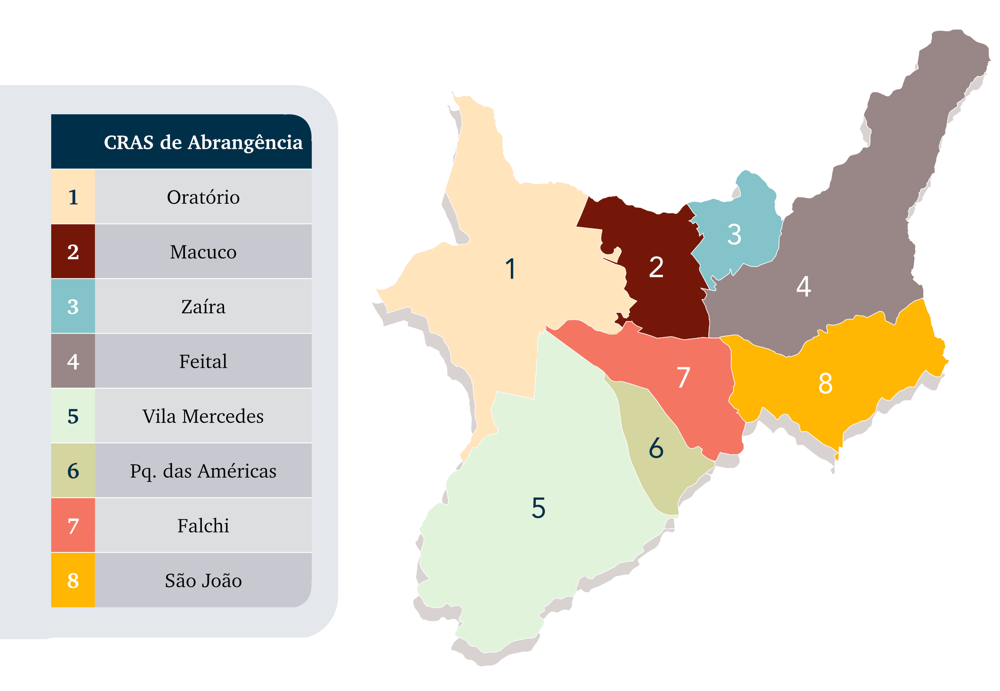

Informação, território e proteção social em Mauá
Está localizado na Região do Grande ABC, área que compõe a região Metropolitana de São Paulo. Dos sete municípios do Grande ABC, Mauá ocupa 7,47% da área territorial da região, sendo que sua extensão territorial é de 62 Km². Desta extensão, 13Km² são áreas de mananciais e 17,5 Km² áreas industriais. É o terceiro município mais populoso da região (418.261 habitantes, segundo IBGE – Censo 2022), e o terceiro em densidade demográfica da região (6.753,01), porém se extrairmos as áreas de mananciais e industriais, esta densidade quase que dobra.
Ainda de acordo com o Censo Favelas 2022, há em Mauá 60 favelas e/ou comunidades urbanas, onde residem 115.251 habitantes (27,5% da população geral). Destacam-se deste recorte as duas maiores favelas do município: Favela do Chafick e do Jardim Oratório, sendo respectivamente 19ª e 20ª maiores favelas do Brasil, com 26.835 e 26.046 habitantes.
Para a Assistência Social, o território é um espaço delimitado onde se concentram não só o espaço de moradia, mas de trocas sociais, culturais, valores, crenças. Também perpassam questões socioeconômicas, onde o território pode facilitar ou não condições de acesso à serviços, educação, saúde, cultura, segurança, entre outros.
O município de Mauá oficialmente não é dividido em bairros, mas em regiões de Planejamento. Essa divisão foi instituída pela Lei Municipal 4452/2009. Atualmente a cidade está dividida em 14 regiões com base nos principais aspectos geográficos, socioeconômicos, culturais e urbanísticos locais e 8 regiões de abrangência de atendimento dos CRAS do município.
O município está organizado em territórios de referência para atendimento dos Centros de Referência de Assistência Social (CRAS). Essa divisão territorial possibilita planejar e executar ações de proteção social básica de acordo com as características e demandas de cada região, fortalecendo a oferta de serviços e a busca ativa das famílias.
